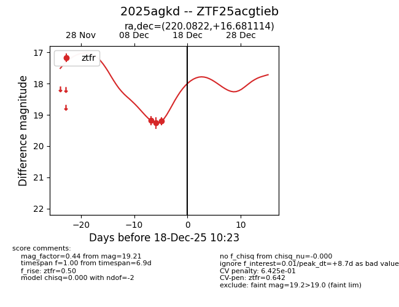
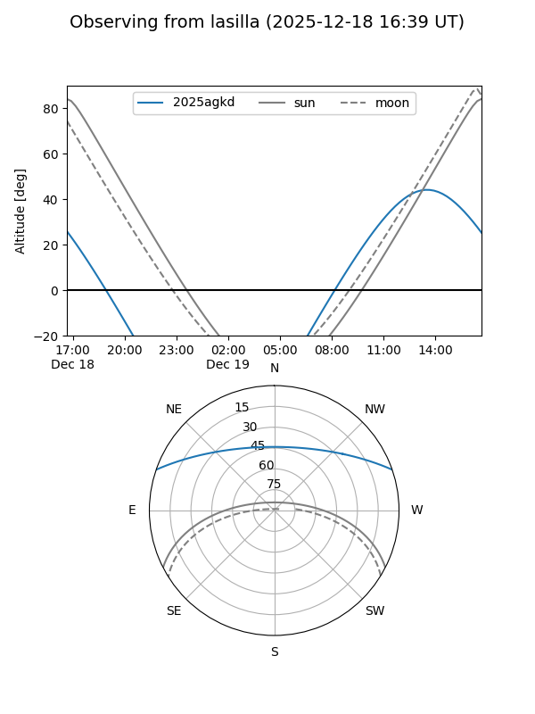
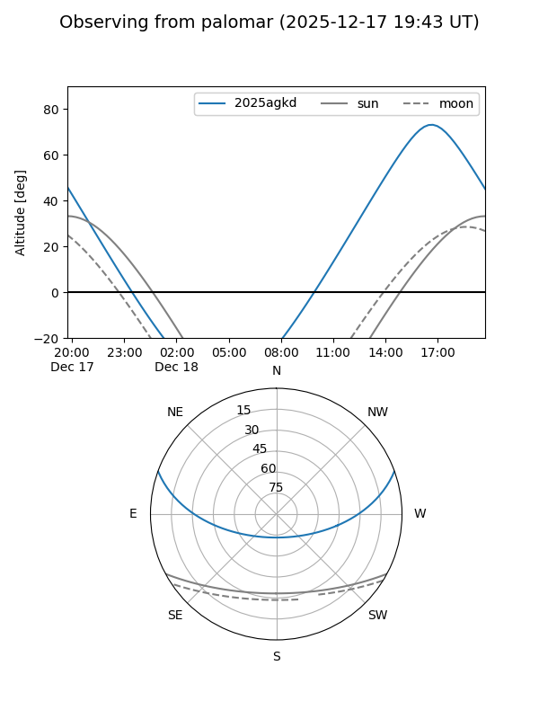

2025agkd
Target 2025agkd at 2025-12-18 11:18
Aliases and brokers:
FINK: fink-portal.org/ZTF25acgtieb
Lasair: lasair-ztf.lsst.ac.uk/objects/ZTF25acgtieb
ALeRCE: alerce.online/object/ZTF25acgtieb
TNS: wis-tns.org/object/2025agkd
YSE: ziggy.ucolick.org/yse/transient_detail/2025agkd
alt names
ZTF25acgtieb (ztf,fink_ztf)
2025agkd (tns,yse)
Coordinates:
equatorial (ra, dec) = 220.0822,+16.68111
equatorial (HMS+DMS) = 14:40:19.72,+16:40:52.01
galactic (l, b) = (16.0545,+62.74684)
Photometry
last ztfr=19.21
3 ztfr detections
Lightcurve

Visibility


Additional plots